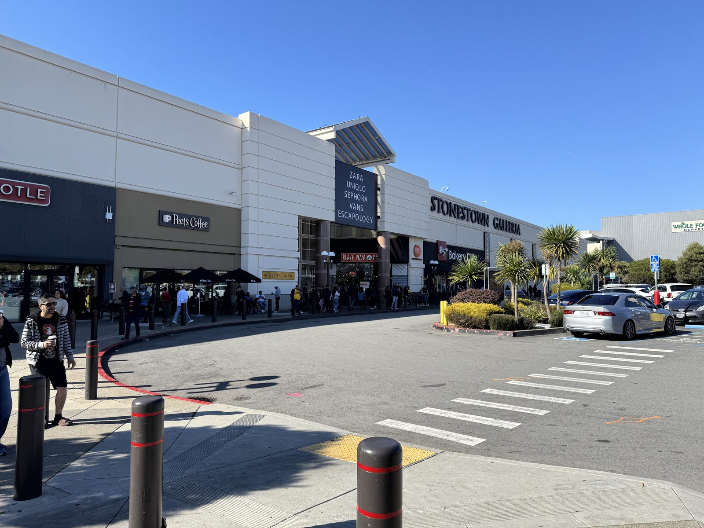

Design Ethnography, Fall 2025
Distracted Pedestrians: Motivations and Consequences of Phone Walking
Pedestrians walking alone were more likely to be on their phones, often for a sense of company, and they judged with some care when it was safe to look down. That judgment mostly worked, and the cost of it landed on the people walking around them.
- Role
- San Francisco fieldwork and site write-up, the literature review, the passive phone use and attentional regulation findings, the design implications and limitations, and collaborative coding in Taguette
- Team
- Erin King, Jordan McWilliams, Sanam Firouzikermanshahi
- Scale
- 3 sites in 3 cities, October 2025

Overview
Phone use while walking is usually studied as a safety problem, in a laboratory, with participants told when and how to look at their screens. None of that work observed the behavior where it actually happens, and less attention has gone to how phone walking is motivated, experienced, and carried out in everyday public life. The three of us ran ethnographic field observation and contextual inquiry through October 2025, each at a site in our own city, and then coded and reconciled what we had into themes we all agreed on.
Prior research gave us the grounding: distracted walking is associated with unsafe crossings and reduced situational awareness, and texting measurably slows gait. It also gave us a frame to argue into, since Argin and colleagues separate the “post-flâneur,” who moves through a space with a device while keeping some awareness of it, from the “smartphone zombie,” who is screen-focused and path-driven.
The question
What motivates people to use their phones while walking, and how does this practice impact both the individual and the people around them?
Method
We used a hybrid ethnographic approach, where each of us took an embedded observational role at a public pedestrian site in our own city, behaving as anyone there would while avoiding anything that might draw attention and change what people did around us.
We recorded field notes on our own phones while watching and immediately afterwards, and took no identifying images or video of anyone we observed. We then followed the observation sessions with contextual inquiry, unstructured walking interviews with participants recruited on site or through convenience sampling, so we could ask people about their choices while they were still making them.
Chicago · Sanam
Michigan Avenue, Millennium Park, and the Chicago Riverwalk
Dense commuter and tourist corridors.
San Francisco · Erin
Stonestown Galleria
An indoor mall adjacent to two universities.
Minneapolis · Jordan
Mill City River District
Open-air recreational paths along the Mississippi.
Key findings
Four themes came out of the field notes and contextual inquiry, repeated across all three sites.
Solo walkers reached for their phones, and people in company put them down
Across all three sites, pedestrians walking alone were consistently more likely to be on their phones than those walking with others, and several participants named the reason themselves. One said that using her phone while moving alone gives her “a sense of connection,” and that texting or scrolling makes the walk feel less lonely even though it divides her attention. One researcher watched the pattern change inside a few minutes, when a young woman walking with an older man used no phone at all while they were together, started using hers the moment he stepped away, and put it away again when he came back. Whether that reflects compensating for being alone, or a norm about what counts as rude in company, is harder to settle from observation, and we saw support for both.
I think I’d be on my phone slightly more alone than when I’m with [partner] because I would not have anyone to talk to. I think part of it is that it’s a little more rude to be on my phone when I’m trying to walk with [partner] than if I am by myself.
Much of the phone use was not use at all
A lot of what looked like phone use served no task. Walkers kept their devices present and ready without putting them to anything in particular, and in those moments the phones were not assisting with navigation, communication, entertainment, or information retrieval. They served as default companions. Phones filled the gaps in periods of transition, which is where I saw them appear most reliably: one of my participants paced in front of a store display refreshing his email, and when I asked why he had opened it he said, “I don’t know, I just check it sometimes.” The other took her phone out once her errand was finished, explaining that she no longer had a goal in mind and the phone was “something to do.” A third participant described phone use on walks as “just passing the time.” We also saw people walking with the phone up and a thumb poised over the screen while they attended to their surroundings, and groups doing the same, devices out and ready while the conversation carried on. The presence of the phone itself was shown to have value, as it offered users digital availability and comfort even when it wasn’t being used.
People calculated when it was safe to look down
Across every field site, phone-walking pedestrians showed a practice of intentional, risk-assessed attentional regulation. They seemed at least partially aware of the state of their own distraction, and made calculated assessments about when they needed to be more attentive to their surroundings and when they could safely return their focus to their screens.
Traffic produced the clearest version. We identified a pattern of people reducing or fully pausing device engagement when approaching or crossing a street, with phone walking resumed swiftly once they reached the sidewalk.
Because I don’t wanna get hit by a car. It is a big city. I try not to have it out when crossing the crosswalk, you know, just in case a driver wasn’t paying attention.
The same regulation applied to other people, which is less obvious and more interesting. One man checking his phone put it away and looked ahead when he noticed a woman approaching, then returned to it immediately after they passed, and a woman did the same to pass one of our researchers. That could indicate an awareness of the social norms around phone use in shared spaces, where a direct encounter carries some expectation of attentiveness, or it could be plain collision avoidance. We could not separate the two.
Some people avoided the cognitive load of switching attention by delegating awareness to someone else. I watched a young child leave the mall clinging to an adult’s arm and following her guidance while using the phone in his hand, never looking up once while he was in my eyesight, while she kept her head up and looked left and right before walking away. That is one end of a spectrum we saw at varying degrees throughout, including groups where the members who were off their devices appeared to lead pace and direction. Others kept the responsibility and widened the margin instead, holding the phone higher so that more of their surroundings entered their field of vision. One of my participants described doing exactly that, saying she was confident she would not run into anyone because she could see things in her periphery, and that she compensated by walking more slowly and keeping partial attention on her peripheral surroundings.
The regulation mostly works, and the cost lands on everyone else
Despite those strategies, attentional regulation was not foolproof. Even when pedestrians appeared confident, device engagement continued to shape their behavior in ways that disrupted the flow around them, and across all three sites phone walkers moved at slower paces than the people near them, meandered, and made untimely stops inside high-traffic areas, which required others to adjust their speed or path or stop short to avoid a collision. Miscalculation was clearest when someone relying on peripheral vision or a delayed look-up stopped suddenly to avoid an obstacle and narrowly missed another person.
Those corrections often prevented direct impacts, but they introduced micro-disruptions like traffic snakes that accumulated within the space. The cost of distraction gets redistributed onto the surrounding pedestrians who accommodate slowed pacing and sudden stops. In Chicago the same thing was visible from the other side, where pedestrians nearby rerouted or slowed, appearing to anticipate the disruption and meeting it with accommodation instead of confrontation, which suggests the adjustment has already settled into something people expect to make.
Design implications
In 1988, Mark Weiser, a computer scientist working at Xerox, coined the term ubiquitous computing. His vision came out of a tension he called a paradoxical intersection, between a growing desire for technology to be less obtrusive and the intrusive quality of the information boom, and his conclusion was that computing would eventually integrate into the environment to the point of being practically unnoticeable.
Smartphones delivered the pervasive connectivity and the opposite of the unobtrusiveness. Designed to maximize engagement, they direct attention to a single screen and away from the surroundings, and phone walking is where that screen-centered model shows its cost, in a failure of context awareness and a heavy demand on attention.
Spatial computing, as Weiser’s idea finished
The persistence of phone walking across varied environments suggests that users are not seeking less information, but rather less friction between digital engagement and physical navigation. Augmented and virtual reality are well positioned to be the realization of that original vision, shifting the digital layer off the handheld screen and into the user’s environment. Ambient interfaces, aware of a user’s context and surroundings, could deliver relevant information without demanding distraction, and multimodal functionality would give more flexibility in how it arrives. The approach has a chance precisely because it doesn’t try to suppress our modern desire for access, but rather integrate content more smoothly into our focus.
Safeguards that would work on the phones people already carry
A warning notification that detects a device being used during walking movement could prompt someone to pay attention to their surroundings. Several participants described their phone use depending on how important the incoming notification felt, which suggests phones could be set to let only the important ones through, by audio or by haptics. Many participants also recognized their own limits here, and we watched a number of them use voice text or calls so they could keep their attention on where they were going. Features like those have already worked their way into daily use, which makes them a more realistic path than asking people to disconnect.
The fear of missing out was partially inferred from the observable patterns and then revealed as an underlying motivation in contextual inquiry, and it sits behind most of the habitual, goalless checking we saw, especially during transitional moments. That compulsion reflects an implicit anxiety about social or informational exclusion, and it is made worse by an attention economy engineered to maximize engagement.
Design interventions can offer alternative modes of access or soften how alerts arrive, and they fail to remedy the socially driven fear that makes people reach for the phone in the first place. So one of the more ambitious implications of what we found is that the solution requires a shift in social norms rather than a better device. When social systems accept periods of digital unavailability, technological solutions like the unobtrusive access spatial computing affords will translate into more honest freedom from the device.
Limitations
The contextual inquiry relied on convenience sampling, with participants recruited on availability and willingness to discuss and demonstrate their phone walking at one of our field sites. That produced rich, in-context discussion, particularly where rapport already existed. Both of my participants were people I already knew, one a close friend and the other a family member, which let them speak openly and reflectively, and also means that familiarity may have shaped how they described their own behavior to me.
Our small, non-random sample is unlikely to reflect the full diversity of pedestrian experiences and motivations. Data collection was also split across three researchers at three sites, which introduced variability in observational focus and interaction style. The contextual inquiry findings are not intended to be representative, but to provide illustrative depth alongside the broader observational patterns.
Reflection
This was collaborative in a way most class projects are not. We each worked alone in the field, in cities hundreds of miles apart, and then had to reconcile what we had into themes all three of us would sign, which meant comparing notes, challenging each other’s readings, and agreeing on what counted as a pattern rather than one researcher’s impression. That process is the reason I trust the findings.
What stuck with me was the attentional regulation. I went in expecting to find people being reckless, and what I found was people running quiet, constant risk assessments with a phone in hand, which is a more capable picture of the pedestrian than the literature on distracted walking tends to assume. The behavior is normalized because people have adapted to it. Whether that adaptation is sufficient is the question the last finding raises, since the adaptation works for the walker and the people around them absorb the difference.
We closed the project with an in-class presentation.